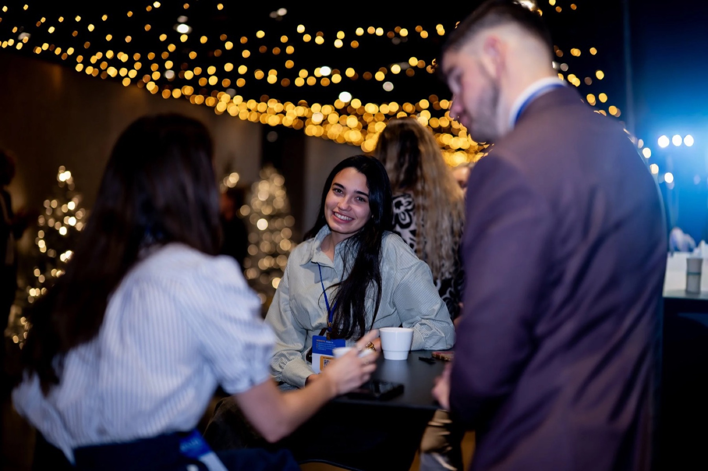
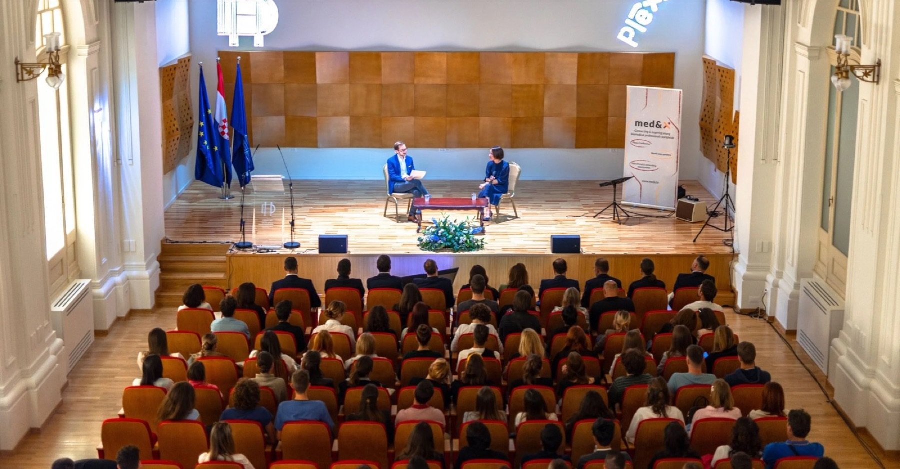
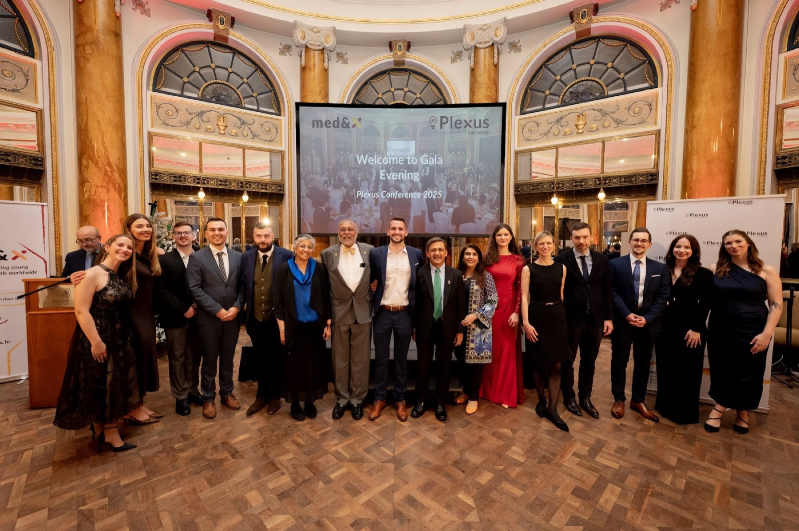
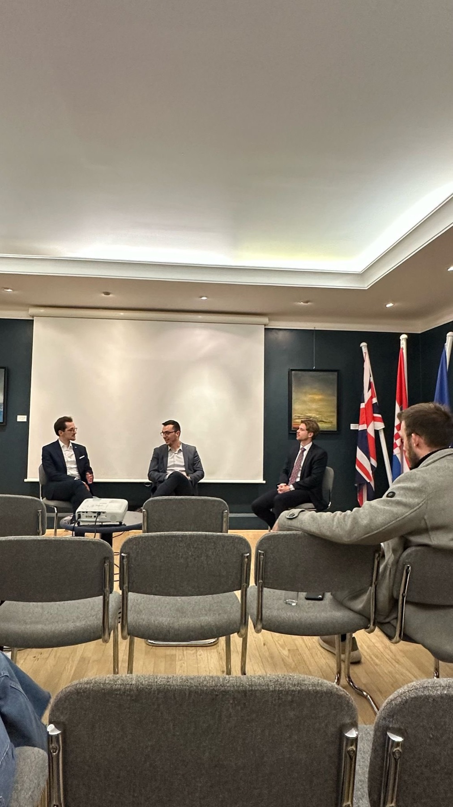
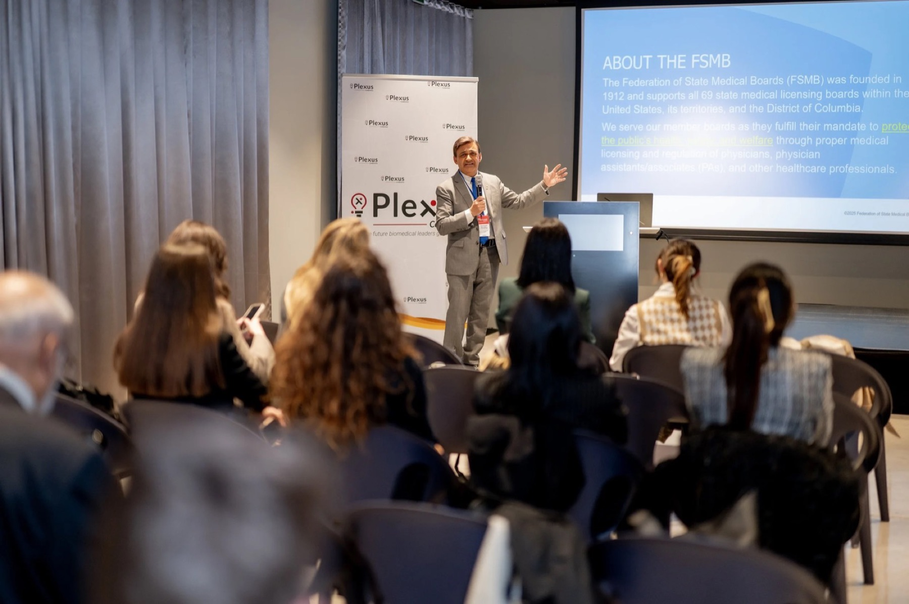
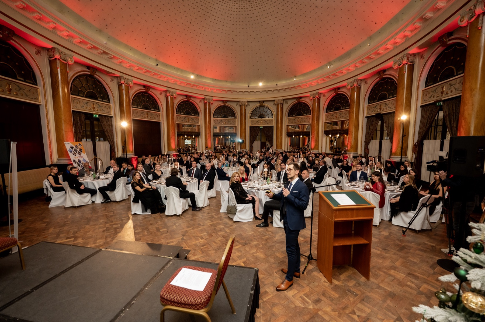
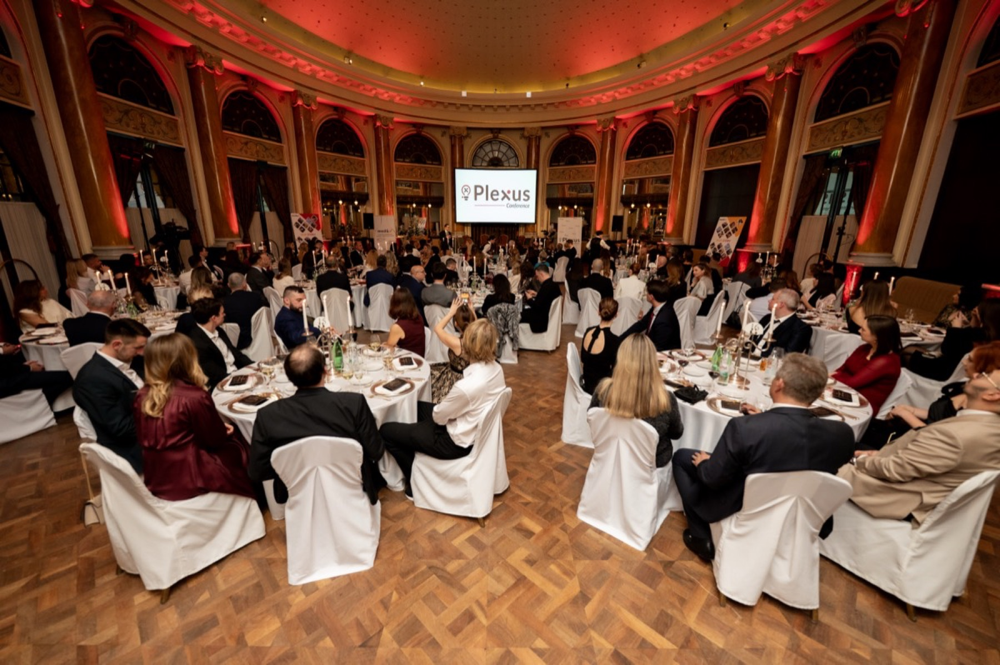

Talent is everywhere.
The right encounter changes everything.
Med&X connects Croatian medicine and science with the world's leading institutions, in both directions.
Med&X connects Croatian medicine and science with the world's leading institutions, in both directions.


 The organizing team, Plexus 2025
The organizing team, Plexus 2025
The exchange runs both ways. Global leaders gain a foothold in a fast-rising biomedical community. Croatian scientists and clinicians gain partners, platforms, and the doors that turn a promising career into a lasting one.
 On the Plexus stage
On the Plexus stage
Between sessions, Plexus


 01
01
Two December days in Zagreb where rising talent meets the people who lead world medicine.
 02
02Internships for Croatian talent inside the world's best labs and clinics.

03A working network of the senior leaders steering Croatian biomedicine.
 04
04Our travelling forum, connecting Croatians abroad with each host city.
Two days of keynotes, panels, and candid conversations in Zagreb each December. Free to attend and deliberately intimate, built so a student can ask a real question and a leader has time to answer it. Across our editions, Plexus has brought Nobel laureates, hospital presidents, and university chancellors to the same room as Croatia's next generation.

 The Plexus stage
The Plexus stage



 The Accelerator community
The Accelerator community
Not exchanges with institutions — internships inside specific labs and clinics at Harvard, Mass General, Mayo Clinic, Cleveland Clinic, Yale, Columbia, King's College London, and Osaka. Fellows learn as much as they can, return to Croatia with frontier skills and lasting mentors, grow into the leaders of Croatian medicine, and keep building the bridge between Croatia and those institutions.
Croatian biomedicine, connected to the world.

medx.hr · president@medx.hr
Scan to visit medx.hr and follow our projects.